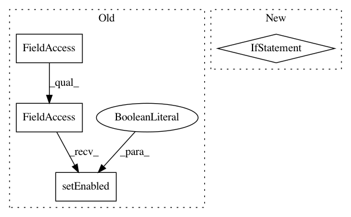

fc2ea63d83934277a866ff59dfecdf542c6d95c1,ilastik/applets/nanshe/dictionaryLearning/nansheDictionaryLearningGui.py,NansheDictionaryLearningGui,apply_operator_settings_to_gui,#NansheDictionaryLearningGui#,126
Before Change
if self.topLevelOperatorView.Ord.value == -numpy.inf:
self._drawer.NormValueSelection.setCurrentIndex(1)
self._drawer.NormValue.setEnabled(False)
elif self.topLevelOperatorView.Ord.value == numpy.inf:
self._drawer.NormValueSelection.setCurrentIndex(2)
self._drawer.NormValue.setEnabled(False)
else:
After Change
self._drawer.NormValueSelection.setCurrentIndex(0)
elif self.topLevelOperatorView.Ord.value == 2:
self._drawer.NormValueSelection.setCurrentIndex(1)
elif self.topLevelOperatorView.Ord.value == 1:
self._drawer.NormValueSelection.setCurrentIndex(2)
elif self.topLevelOperatorView.Ord.value == 0:
self._drawer.NormValueSelection.setCurrentIndex(3)
In pattern: SUPERPATTERN
Frequency: 3
Non-data size: 4
Instances
Project Name: ilastik/ilastik
Commit Name: fc2ea63d83934277a866ff59dfecdf542c6d95c1
Time: 2015-03-31
Author: kirkhamj@janelia.hhmi.org
File Name: ilastik/applets/nanshe/dictionaryLearning/nansheDictionaryLearningGui.py
Class Name: NansheDictionaryLearningGui
Method Name: apply_operator_settings_to_gui
Project Name: ilastik/ilastik
Commit Name: fc2ea63d83934277a866ff59dfecdf542c6d95c1
Time: 2015-03-31
Author: kirkhamj@janelia.hhmi.org
File Name: ilastik/applets/nanshe/dictionaryLearning/nansheDictionaryLearningGui.py
Class Name: NansheDictionaryLearningGui
Method Name: apply_gui_settings_to_operator
Project Name: ilastik/ilastik
Commit Name: bd2d91ba65eae225e34facdc69b7b99ea18853c6
Time: 2013-07-26
Author: anna.kreshuk@iwr.uni-heidelberg.de
File Name: ilastik/applets/blockwiseObjectClassification/blockwiseObjectClassificationGui.py
Class Name: BlockwiseObjectClassificationGui
Method Name: _onApplyButtonPressed